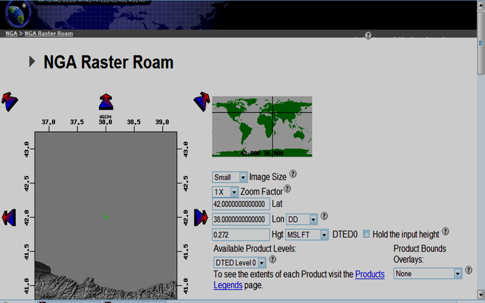
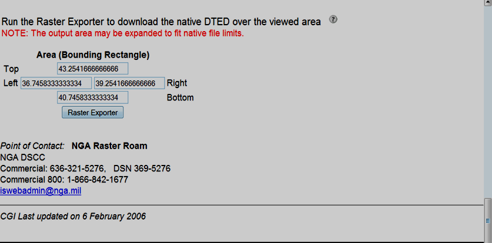
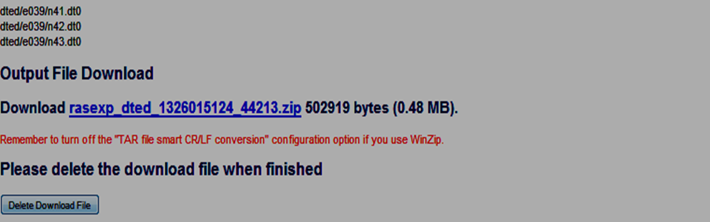
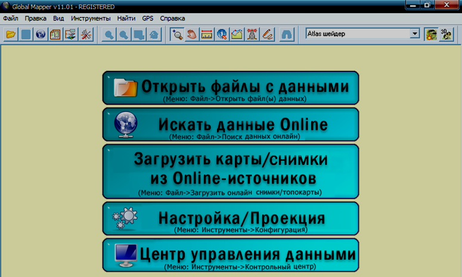
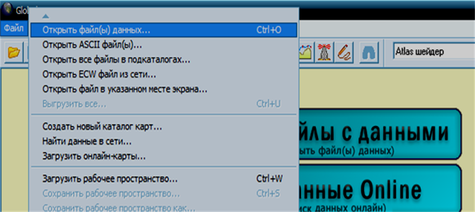
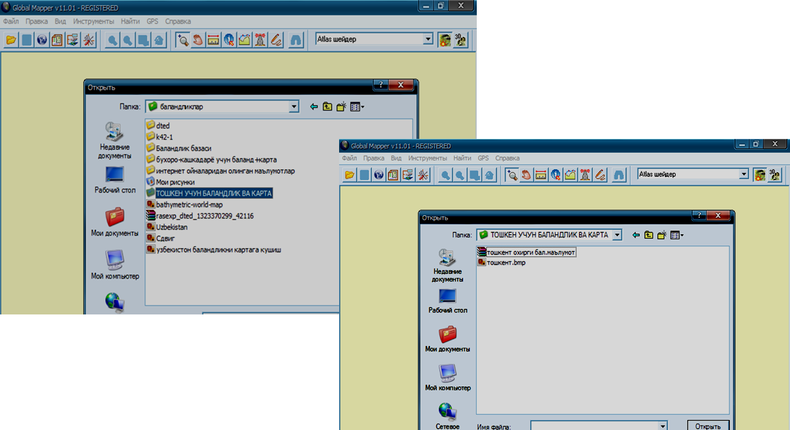
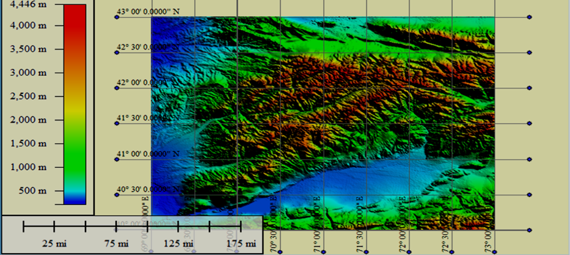
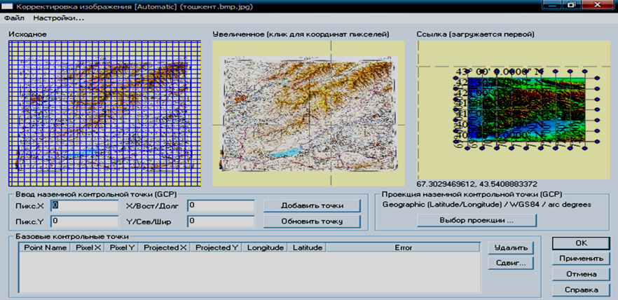
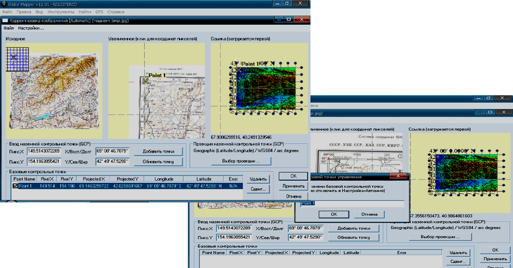
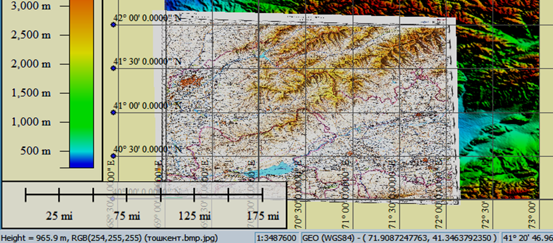

Мавзу: Global Mapper дасутри ёрдамида ернинг мутлоқ баландлигини аниқлаш ва автоматлашган тизим асосида Инженрлик абектларини лойхалаш ишларини олиб бориш
Reja.
1 Global Mapper dasturi xaqida ma`lumotlar
2. Global Mapper dasturida ma`lumotlar taxlili
3. Global Mapper dasturida tayanch nuqtalarni tanlash
Global Mapper dasturida ham kartalarninng balanlik ma’lumotlar asosida uch o’lchamli
tasvirlarini hosil qilish mumkin. Buning uchun balanlandlik ma’lumotlari bazasi saqlangan
faylni dastur yordamida ochi kifoya. Yuqorida aytib o’tganimizdek dastur joyning balandlik
ma’lumotlari asosida rel’ef ko’rinishini tasvirlaydi, bu esa kartadan foydalanishni biroz
murakkablashtiradi. Lekin ushbu muammoni dastur orqali echish imkoniyati bor. Buning uchun
ushbu maydonga tegishli mavzuli kartani rel’efli kartaga bog`lash kifoya. Natijada dastur
avval joyning rel’efli tasvirini uning ustidan mavzuli kartani joylashtiradi.
Gis texnologiyalari asosida 3-o’lchamli geotasvirlarni hosil qilish uchun bizga
balanlik ma’lumotlar bazasi va rastrli tasvirlar kerak bo’ladi. Global Mapper dasturi hgt
formatidagi balandlik ma’lumotlarini o’qiy oladi. hgt formatidagi balandlik ma’lumotlar
bazasini yuklab olishning bir nechta turlari va ko’rinishlari mavjud:

NGA (NIMA) DTED - NIMA agentstvasining balandlik ma’lumotlar bazasi
Tanlaganimizdan so’ng kartaning chap tomonida tanlagan maydonimizning nomi va unga
tegishli bo’lgan koordinatalar paydo bo’ladi (1-rasm). Agar berilgan koordinatalar sistemasi
ko’rsatkichlari bizga ma’qul bo’lmasa, o’zimizga kerakli koordinatalarni kerakli uzoqlik va
kenglikka joylashtirib, oynaning pastki qismida joylashgan Raster Exporter tugmasini
tanlaymiz (2-rasm).

Natijada tanlangan maydonning balandlik ma’lumotlar bazasi .zip fayl ko’rinishida paydo
bo’ladi (3-rasm). Ushbu faylni tanlaganimizda ma’lumotlar bazasi avtomatik ravishda
kompyuterimizga joylashadi. Faqat faylni o’zimizga kerakli joyga ko’chirib olishni
ko’rsatsak bas. Ko’chirib olish jarayonida faylda qaysi hudud balandlik ma’lumotlari bo’lsa
o’sha hudud nomi bilan nomlash tavsiya etiladi. Masalan, Toshkent shaxri uchun balandlik va
karta.

Global Mapper dasturida ishni boshlash uchun 2 marta Global Mapper ikonkasini ta’kidlab
ko’rsatish kerak. Bir necha soniyadan so’ng dastur oynasi ochiladi (4-rasm). Ushbu ishni
Toshkent shaxri misolida bajaramiz.

Oynaning instrumentlar panelidagi fayl menyusini tanlab, “Ma’lumotlar faylini ochish”
“Otkrыt fayl dannыx” dialogini tanlaymiz. Shundan so’ng balandlik ma’lumotlari saqlangan
papkamizdan Toshken shaxriga to’g`ri keluvchi hgt formatidagi zip arxivator faylini,
“Ochish” “Otkrыt” tugmasini bosamiz


Natijada dastur nomenklatura bo’yicha qanday hudud tanlangan bo’lsa o’sha joyning rel’efli
ko’rinishini tasvirlab beradi. Bunda tasvirning chap va o’ng tomonida to’rlar bilan
birgalikda kartografik uzoqlik hamda kenlik tasirlanadi. Bundan tashqari dastur oynasining
chap qismida hududning balandlik ma’lumotlari gipsometrik usulda ranglarda tasvirlangan
bo’ladi.

Tayanch nuqtalari sifatida topografik to’r chiziqlarining kesishgan joyi, erlardan
foydalanish chegaralaring burilish nuqtalari va aholi yashaydigan joylarning belgisi qabul
qilinishi mumkin.
“Tasvirni to’g`irlash” “Korrektirovka izobrajeniya” dialogi paydo bo’ladi

Ushbu dialogda 3 xil ko’rinishdagi oynachalar tasvirlanadi. 1 - oynada dastlabki topografik
rastrli kartamiz, 2 - oynada kattalashtirilgan karta (koordinata qiymatlarini tanlash
uchun), 3 – oynada rel’efli karta tasvirlanadi. 2-oynadagi kartani kattalashtirib, 1-nuqtani
tanlaymiz va 3-oynadan ham shu koordinataga to’g`ri keladigan joyni tanlab, 1-nuqtani
joylashtiramiz. Keyin “Nuqtani qo’shish” “Dobavit tochku” tugmasini bosamiz va nazorat
nuqtasini xotiraga olamiz. Shu yo’sinda yuqori aniqlikdagi eng kamida 4 nuqtani tanlab
xotirada saqlaymiz.
Nuqtalarni xotirada saqlaganimizdan so’ng “Qabul qilish” “Primenit” tugmasini bosamiz,
bu bizga kiritilgan koordinata nuqtalarini qabul qilishga yordam beradi. OK tugmasini
bosamiz.

Rel’efli karta 3 o’lchamli kartani yaratishimizda asos karta bo’lib xizmat qiladi. Asos
kartaga topografik kartani bog`laganimizdan so’ng dastur qatlam ko’rinishda avval asos
kartani so’ngra topografik kartani joylashtiradi

Yuqorida keltirilgan dasturiy ta’minot ketma-ketligi yordamida qo’yidagi bosqich asosida
topografik kartalarni yangilash jarayoni kuzatiladi